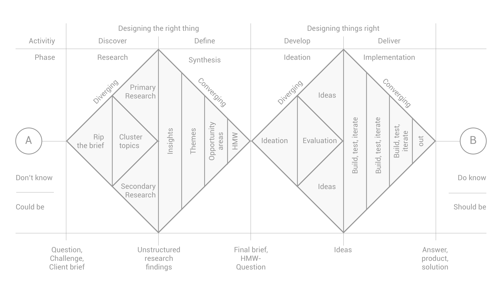

차세대경험디자인(이주호교수님) 중간평가
나의 일상에 들어온 처방약,
괜찮은 걸까?
처방 직후, 평소 먹던 영양제와 함께 먹어도 되는지 확신하지 못하는 경험
- School
- 이화여자대학교 GSD UX디자인
- Student
- 262MAD22 전새이
- Date
- 2026.10.15~10.22
- Tool
- Claude, Claude Code, Google Form
OverviewDiscover
- 문제점 발견
- 처방약을 받은 직후 평소 먹던 영양제를 함께 먹어도 되는지 모르겠다.
- 확장 사고
- 만성질환자는 병용을 많이 할 텐데, 어떻게 정보를 얻고 관리할까?
- 탐구 질문
1사람들은 처방약을 받고 나와 같은 궁금증이 들까?
3해결하지 못한 경험은 얼마나 있고, 그 이유는 무엇일까?
Framework
Double Diamond

Discover 발산
문제점 발견 · 데스크리서치 · 설문 · 인터뷰
Define 수렴
최종 리서치 인사이트 · 페인포인트 · 가설 세우기
Develop 발산
컨셉 3가지와 아이디어 도출
Deliver 수렴
컨셉을 검증하고 발전시켜 기말에서 완성도 높게 디자인한다.
출처: Design Council, The Double Diamond
BackgroundDiscover
데스크리서치
①진료
진료 시간이 짧다
한국 종합병원 평균 진료 시간은
6.2~7.4분이다.
미국 약 21분, 영국 약 9분
②환자
스스로 정보를 찾는다
20~50대 인터넷 이용자의 약
78%가 건강 의료정보를 검색한다
③약·영양제·음식
처방약과 영양제, 음식은 상호작용할 수 있다
- 영양제건강기능식품은 처방약·일반의약품과 상호작용해 약의 효과를 줄이거나 부작용을 늘릴 수 있다.
- 음식약의 효과는 함께 먹고 마시는 식음료에 따라서도 달라질 수 있다.
- 예당뇨약 + 뽕잎·누에가루는 저혈당 위험이 있을 수 있다. 인삼 혼합제품은 혈당·혈압이 오를 수 있어 혈압약 복용자는 주의가 필요하다.
- 식약처약을 먹는 중이라면 건강기능식품을 먹기 전에 의사와 상담하라고 권고한다.
Insight처방 이후에 이어지는 일상과 처방약은 서로 상호작용하며, 이에 대한 의문은 대부분 환자 스스로 해결하고 있다.
출처: PMC12398989 · 2025 인터넷이용실태조사 · 한국의약통신 「약과 영양제 병용, 안전할까?」(식약처·MSD 매뉴얼 인용) · MSD 매뉴얼 「약물 상호작용」
SurveyDiscover
설명이 부족해 검색에 기대지만, 그 정보마저 신뢰하기 어렵다
응답자52명 (만 18~65세)Tool Google Form
질문 1.같은 궁금증이 들까?
17.340.442.3
가장 알고 싶은 영역
Insight 1약과 함께 챙길 것에 대한 설명이 가장 비어 있다.
질문 2.든다면 어떻게 해결할까?
인터넷 검색71.2%
약사 문의9.6%
커뮤니티·SNS9.6%
병원 콜센터·간호사3.8%
기타5.8%
Insight 2직접 질문보다 검색으로 해결한다.
질문 3.해결하지 못한 경험은
얼마나 있고, 그 이유는 무엇일까?
38.526.913.517.3
정보가 달라 신뢰하기 어려움46.2%
진료 시간 부족42.3%
분위기상 묻지 못함28.8%
Insight 3진료실에서는 질문이 막히고, 검색에서는 신뢰가 어렵다.
InterviewDiscover
설문에서 발견한 인사이트를 확인하고, 새로운 발견으로 이어지다
대상A30대 후반 직장인B30대 중반 강사C53세 주부D30세 임산부
모집 기준최근 2년 내 병·의원 방문과 처방약 경험, 질병을 1개월 이상 관리
설문 인사이트인터뷰 의견반례
A영양제를 중단하라는 말만 듣고 이유는 듣지 못했다.
C진단 초기에 설명이 짧았고, 병용은 묻지도 듣지도 못했다.
D어떤 영양제가 영향을 주는지 몰라 불안했다.
③확인 + 확장질문하기도, 정보를 신뢰하기도 어렵다
질문A는 붐비는 약국에서 다시 묻기 어색했고, D는 진료실에서 긴장했다.
신뢰B는 이중 확인했고, D는 수치·근거가 있는 정보만 신뢰했다.
출처: 자체 인터뷰 4명(요약, 개인 식별 정보 제외)
Behavioral ArchetypeDiscover
궁금증을 다루는 방식은 세 가지로 나뉜다
①스스로 해결형
행동궁금증이 생기면 대부분 어떻게든 해결한다.
대표 인터뷰B
②찾지만 신뢰하기 어려운형
행동찾아보지만 어떤 정보를 따를지 판단하기 어려워한다.
대표 인터뷰D
출처: 자체 설문(유효 52명)·인터뷰 4명
InsightDefine
설명은 빠져 있고, 돌아갈 길은 없고, 판단은 어렵다
1약 자체 설명은 있지만, 약과 함께 챙길 것(영양제·음식·운동)에 대한 설명이 빠져 있다.
2궁금증은 현장 밖에서 생기는데, 돌아갈 길이 없다.
3정보는 많지만, 내 상황에 맞는지 판단하기 어렵다.
어떻게 하면 처방약을 먹는 사람이 약과 일상(영양제·음식)의 상호작용을 쉽게 확인하고 판단할 수 있을까?
출처: 자체 설문(유효 52명)·인터뷰 4명
OpportunityDefine
페인포인트와 기존 서비스의 빈틈에서 기회영역을 발견하다
단계페인포인트기존 서비스의 빈틈 + 기회영역
01진료·약국
설명이 짧고 병용 설명이 없다
약·영양제 확인은 있지만, 내 하루 흐름 위에서 보여주는 곳은 없다
02질문
붐비는 곳에서 못 묻는다
약사 상담은 있지만, 궁금증을 적어 두었다가 물을 때 꺼내 볼 수 있는 곳은 없다
03나온 뒤
궁금증이 생겨도 돌아갈 곳이 없다
이력 조회와 복용 알림은 있지만, 처방 직후 먼저 오는 안내는 없다
04검색·결정
검색으로 해결하지만 정보가 흩어져 있고 신뢰하기 어렵다
흩어진 정보를 한곳에서 신뢰할 수 있게 보여주는 곳이 부족하다
기존 서비스 조사 범위 기준 (심평원 · 로그싱크 · 메디코치 · 커넥트허브 · Drugs.com · Medisafe). 출처: 자체 설문(유효 52명)·인터뷰 4명
HypothesisDefine
Who · How · What
처방약을 먹는 사람이 처방약과 내 일상(영양제·음식 등)의 상호작용을 하루 타임라인에서 한눈에 볼 수 있으면,
같이 먹어도 되는지 판단하기 쉬워진다.
A처방약과 하루의 조합
How처방 이력을 불러와 상호작용을 타임라인에 겹쳐 보여주면
B먼저 다가가기
How약을 받은 직후 간단한 입력만으로 상호작용 안내를 먼저 받으면
What약국을 나선 뒤 혼자 검색하며 헤매는 일이 줄어든다
C질문 준비
How궁금할 때 바로 기록해두었다가 방문 전에 질문을 미리 정리해주면
What현장에서 하려던 질문을 놓치지 않고 묻는다
ConceptDevelop
3가지 컨셉과 아이디어
처방약과 내 하루의 조합을 한눈에 확인한다
- Must하루 타임라인에 상호작용 표시하기
- Should처방 이력 불러오기 및 나의 하루 타임라인 기록 (온보딩 & 수정가능)
- Nice운동 주의·권장 사항 알림
필요한 순간에 먼저 다가간다
- Must처방 직후 상호작용 안내 먼저 받기 (출처·약사 확인 포함)
- Should처방 정보 자동 연동 혹은 직접 입력 (영양제는 간단히 입력)
- Nice안내에서 생긴 궁금증을 질문으로 저장
질문을 미리 준비해 준다
- Must궁금증·복용 후 반응 바로 기록 (위젯, 메모, 음성메모)
- Should방문 직전에 내 기록에서 물어볼 질문을 AI가 요약해 제시
- Nice녹음 기능으로 의사 및 약사 답변 한 장으로 요약
Must: 핵심 기능 · Should: 효과를 높이는 기능 · Nice: 확장 기능
한계설문은 질환 관리 전반을 넓게 물어 영양제와 처방약의 병용을 직접 묻는 문항이 없다. 좁히는 과정에서 병용 규모가 새로 필요한 질문으로 드러났다.
다음병용 규모는 보충 설문으로 확인하고 컨셉과 아이디어를 다각도로 검증 후 깊게 디자인한다.